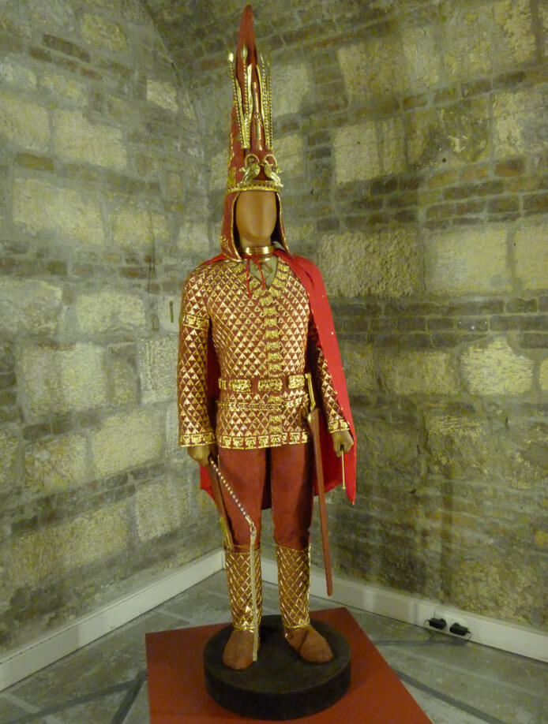
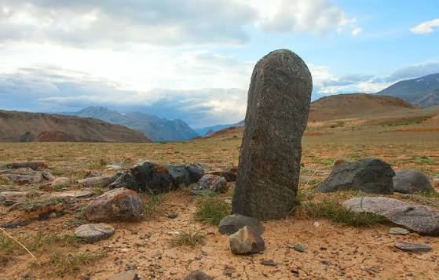
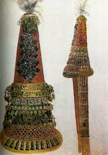
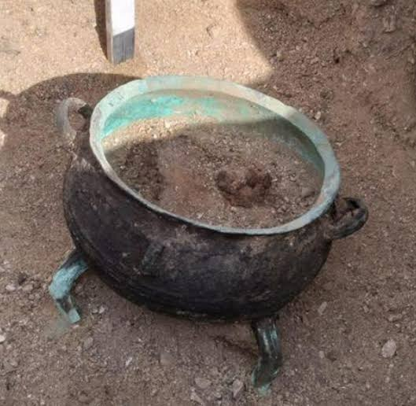
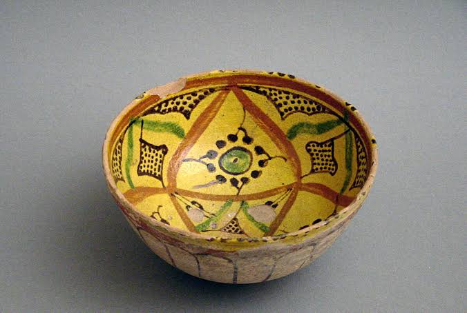

The museum holds an extensive collection of bronze age weaponry,
medieval ceramics from Otrar, and traditional silver jewelry (zergerlik buymdar). The collection spans thousands of years of steppe civilization.
Top 5 Featured Museum Artifacts
1. The Golden Man (Altyn Adam)
Discovered in 1969 at the Issyk kurgan in southeastern Kazakhstan, the
Golden Man remains one of the most remarkable archaeological
discoveries in Central Asian history. Dating back to the 5th–4th
century BCE, this warrior's costume consists of over four thousand
gold ornaments decorated with animal style motifs representing the
Saka culture.

Reconstruction of the Golden Man suit exhibited in the Gold Hall.
The helmet features high arrow-like ornaments symbolising connection
to the sky, while the cloak displays intricate representations of snow
leopards, ibexes, and mythical winged horses.
2. Turkic Stone Stelae (Balbals)
Stone stelae, known locally as balbals, are anthropomorphic monuments
erected throughout the Eurasian steppe by ancient Turkic nomads between
the 6th and 10th centuries. These statues were carved out of granite or
sandstone to honor fallen warrior elites and ancestral leaders.

Authentic 8th-century Turkic stone warrior figure recovered from Semirechye.
Most figures depict a standing or seated warrior holding a ritual vessel
in both hands at belt level, symbolising eternal presence during funeral feasts.
3. 19th Century Kazakh Bridal Headwear (Saukele)
The Saukele is a towering conical headpiece worn by Kazakh brides during
the wedding ceremony and initial months of married life. Standing up to
seventy centimeters tall, it represents one of the most elaborate and expensive
traditions in Kazakh folk art and tailoring.

Bridal Saukele adorned with silver pendants, coral beads, and velvet.
Master jewellers (zergerler) crafted these pieces using precious corals,
turquoise, silver plates, and rare eagle-owl feathers to ward off evil spirits.
4. Ancient Saka Bronze Cauldron
Cast bronze cauldrons were vital ceremonial and practical objects among early Saka
tribes residing in the Seven Rivers region. Dating back to the 1st millennium BCE,
these vessels required sophisticated metallurgical knowledge to cast in solid bronze.

Large ceremonial bronze cauldron with mountain goat handles.
The legs and handles are frequently molded in the shape of ibexes, winged lions,
or horses, serving both a functional grip and a sacred symbolic role during communal gatherings.
5. Medieval Glazed Ceramics from Otrar
Otrar was a major commercial hub along the Northern Silk Road. Archaeological
excavations at the ancient city mound revealed advanced pottery kilns producing
beautifully glazed tableware between the 11th and 14th centuries.

Fragment of an 11th-century glazed bowl with floral cobalt decorations.
These ceramic plates and oil lamps feature geometric, floral, and calligraphic patterns
painted in cobalt blue, turquoise, and copper green lead glazes.